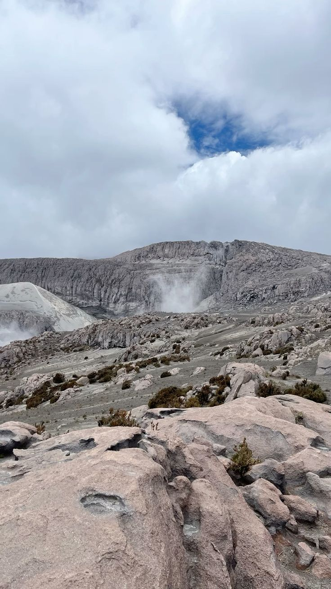
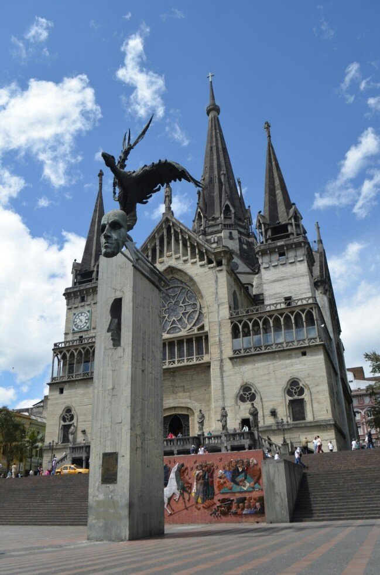

Descubre Caldas
Ubicado en el corazón del Eje Cafetero, Caldas es un departamento que combina naturaleza, tradición y modernidad. Su capital, Manizales, es conocida como la “ciudad de las puertas abiertas” y destaca por su gente amable, su arquitectura y su ambiente cultural y universitario.
En A&G TOURS te ofrecemos transporte turístico y empresarial para recorrer los lugares más emblemáticos de Caldas: desde el Nevado del Ruiz y los termales naturales, hasta pueblos patrimoniales como Salamina y eventos únicos como la Feria de Manizales.
Viaja con seguridad, puntualidad y confort mientras descubres la riqueza del Paisaje Cultural Cafetero. Con nosotros, cada trayecto se convierte en una experiencia inolvidable llena de cultura, naturaleza y hospitalidad caldense.
Mirador de Chipre - Manizales
El icónico Mirador de Chipre ofrece una de las vistas más impresionantes del paisaje cafetero. Desde aquí puedes apreciar los amaneceres y atardeceres sobre la cordillera, disfrutar de sus coloridas escaleras y del ambiente lleno de música, comida y tradición manizaleña.


Feria de Manizales
La Feria de Manizales es uno de los eventos más importantes de Colombia. Cada enero, la ciudad se llena de alegría con desfiles, conciertos, reinados, muestras culturales y eventos taurinos. Su energía contagiosa y su ambiente festivo la convierten en una celebración única que refleja el espíritu alegre del pueblo caldense.
Nevado del Ruiz
Parte del Parque Nacional Natural Los Nevados, el imponente Nevado del Ruiz es un destino ideal para los amantes de la aventura y el ecoturismo. Sus páramos, glaciares y lagunas ofrecen paisajes de ensueño y la oportunidad de conectar con la majestuosidad de la naturaleza andina.
Salamina, patrimonio cultural
Salamina, conocida como la “Ciudad Luz” del Eje Cafetero, es un tesoro de arquitectura paisa, balcones floridos y calles empedradas. Su cercanía al Valle de Samaria, hogar de las palmas de cera, lo convierte en un destino perfecto para quienes buscan historia, cultura y paisajes únicos.
Catedral Basílica de Manizales
La imponente Catedral Basílica de Manizales es un ícono arquitectónico de estilo neogótico. Con más de 100 metros de altura, ofrece un mirador desde el que se puede apreciar toda la ciudad. Es uno de los templos más altos de Colombia y un símbolo de la fe y el arte caldense.
Recinto del Pensamiento
El Recinto del Pensamiento es un lugar ideal para el ecoturismo y la educación ambiental. Combina mariposarios, orquidearios, senderos ecológicos y miradores en medio del bosque de niebla. Es un espacio donde naturaleza y conocimiento se encuentran en perfecta armonía.
Parque de Chinchiná
El Parque Principal de Chinchiná es el corazón del municipio, rodeado de arquitectura tradicional y el aroma del mejor café. Su icónica taza gigante representa el orgullo caficultor de Caldas, invitando a los visitantes a disfrutar de su calidez y hospitalidad.

Parque de la República - Manizales
El Parque de la República es un oasis verde en el corazón de Manizales. Sus jardines, esculturas y su lago central lo convierten en un espacio perfecto para descansar, caminar y disfrutar del aire fresco de la montaña. Un punto ideal para sentir la calma y belleza de la capital caldense.
¡Contáctanos ahora!